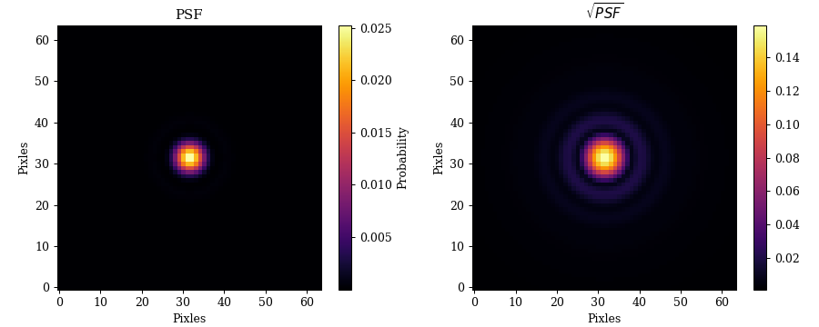
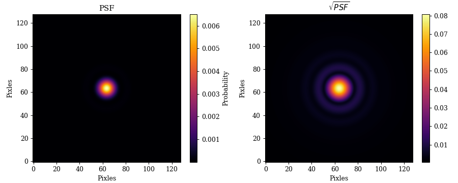
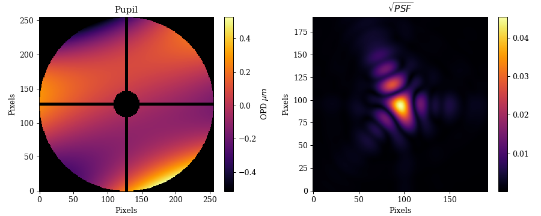
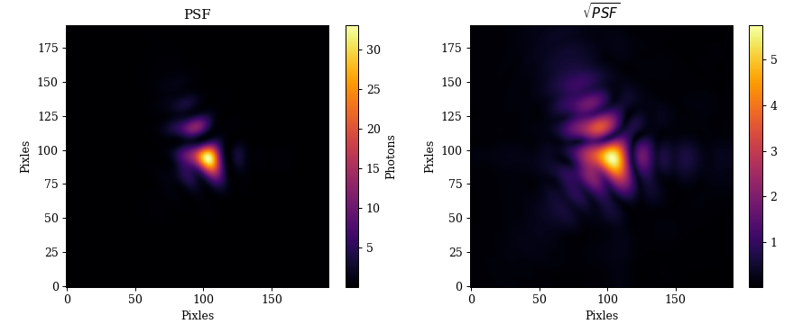
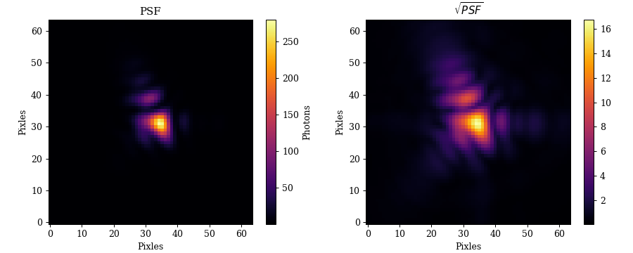
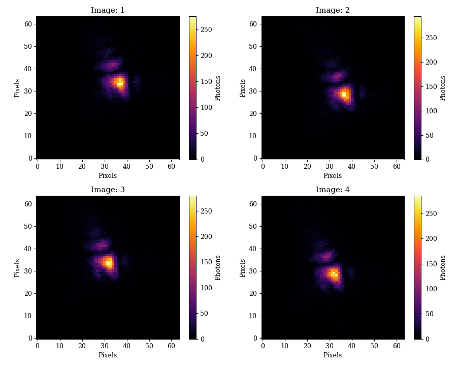
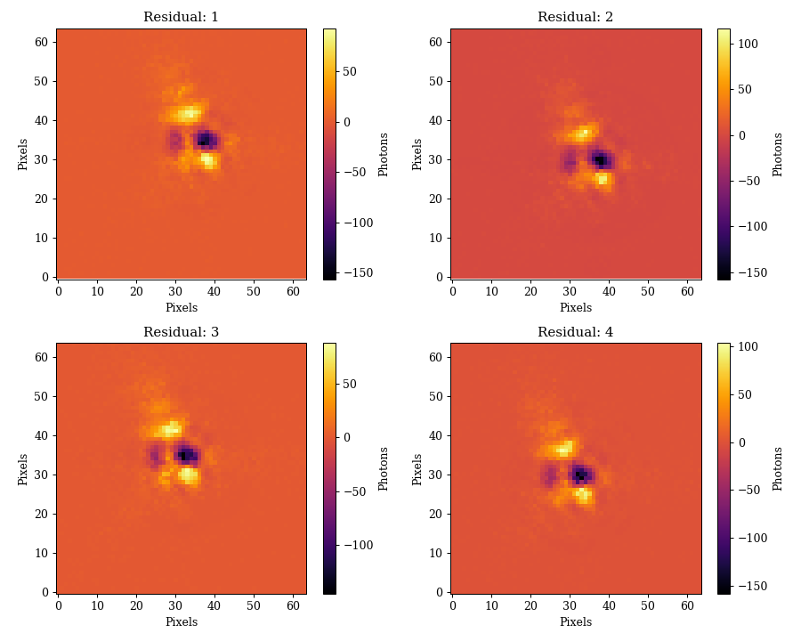
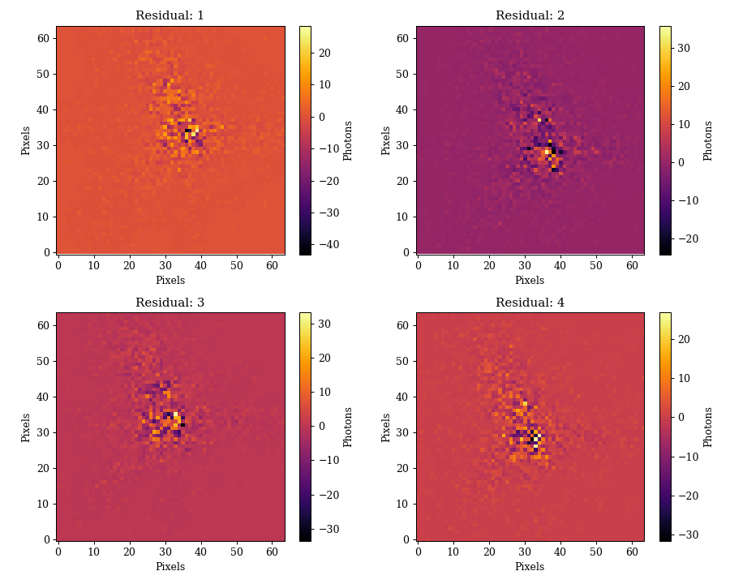

Using ∂Lux¤
∂Lux is built in Zodiax, so users should start with the Using Zodiax Tutorial, which covers the the basics of the framework and how to use the optimisation tools used in ∂Lux.
Overview¤
∂Lux is an open-source differentiable optical modelling framework harnessing the structural isomorphism between optical systems and neural networks, giving forwards models of optical system as a parametric neural network. In ∂Lux we represent optical systems as a series of layers, each of which applies some transformation to either a wavefront or PSF. The layers are connected in a feed-forward manner, with the output of each layer as the input to the next. This construction allows for very complex optical systems to be parameterised by these layers and for each monochromatic wavefront calculation to be performed in parallel and optimised by Jax.
dLux is designed to be verbose about what is happening under the hood. We think that in order for users to be confident in their results that it is important to be clear about what goes in to that model. Becuase of this dLux tries to avoid 'pre-built' classes and optical systes, allowing users to be flexible in the way they model their systems. This helps users become more familiar with the underlying physics and computational methods and allows them to build more complex configurations.
Note
All units within ∂Lux are SI units. This means that all lengths are in meters, angles are in radians and wavelengths are in meters.
Class Overview¤
∂Lux has Five main classes that are used to model optical systems:
-
Optics: A class that is used to storeOpticalLayerclasses.OpticalLayerclasses perform transformations on theWavefrontclass in order to model an optical system. There are three main types ofOpticalLayerclasses:- Optical Layers: These perform the basic operations on wavefronts such as creation, normalisation, adding phase, optical path differences, titls, rotations etc.
- Aperture Layers: This is an expansive module that can be used to create both static and dynamic differentiable apertures. Most used cases are covered by the
ApertureFactoryclass, which can be used to create a variety of single apertures including secondary mirror occulters and spiders. - Propagators: These layers propagate wavefronts between Pupil and Image planes. The most commonly used propagator is the
AngularMFTclass, which allows for the ouput pixel scale to be specified.
-
Detector: A class that is used to storeDetectorLayerclass. These transformations are used to model the effects of the detector on the PSF. -
Sources: These classes are a series of parameterised source objects. -
Instrument: This class is used to store theOptics,DetectorandSourceclasses. It is used to model the full instrument and is used to calculate the PSF. -
Observation: These are clases that can be used to model complex observation schemes by allowing for theInstrumentclass to be manipulated in order to create data sets, time series PSFs and more.
In this tutorial we will cover the basics of these classes and how to use them together!
A Simple Optical system¤
Layers that manipulate wavefronts are chained together in a list and passed into a Optics object. There are three types of layers that can be used inside the Optics object. Lets have a quick look at how we would create a basic optical system and model its PSF.
import jax.numpy as np
import dLux as dl
# Define the parameters of the optical system
aperture_diameter = 1.0 # meters
pixel_scale = 2e-7 # Radians per pixel of the detector
aperture_npixels = 256 # Number of pixels representing the wavefront
detector_npixels = 64 # Number of pixels in the detector
# Define our Optical configuration as a list of layers
layers = [
# Create a wavefront object
dl.CreateWavefront(aperture_npixels, aperture_diameter),
# Create a Circular Aperture
dl.ApertureFactory(aperture_npixels, name='Aperture'),
# Normalise the wavefront to unity power
dl.NormaliseWavefront(),
# Propagate the wavefront to the detector
dl.AngularMFT(detector_npixels, pixel_scale, name='Propagator'),
]
# Create the Optics object
optics = dl.Optics(layers)
# Propagate the wavelengths through the optics
wavelengths = np.linspace(1e-6, 1.2e-6, 5)
psf = optics.propagate(wavelengths)
Plotting code
plt.figure(figsize=(10, 4))
plt.subplot(1, 2, 1)
plt.title("PSF")
plt.imshow(psf)
plt.xlabel('Pixles')
plt.ylabel('Pixles')
cbar = plt.colorbar()
cbar.set_label('Probability')
plt.subplot(1, 2, 2)
plt.title("$\sqrt{PSF}$")
plt.imshow(psf**0.5)
plt.xlabel('Pixles')
plt.ylabel('Pixles')
cbar = plt.colorbar()
plt.tight_layout()
plt.savefig("assets/simple_psf.png")

Working with ∂Lux objects¤
∂Lux is built in Zodiax allowing for easy path based manipulation of the objects. Each ∂Lux class has in-built __getattr__ methods that allows for individual layers to be accessed by their name parameter (covered in the Using Zodiax Tutorial). This allows for easy manipulation of the layers in the Optics object. Lets start by examining the optics object which as inbuilt pretty-printing methods:
print(optics)
> Optics(
> layers={
> 'CreateWavefront':
> CreateWavefront(
> name='CreateWavefront',
> npixels=256,
> diameter=f32[],
> wavefront_type='Cartesian'
> ),
> 'Aperture':
> StaticAperture(name='Aperture', aperture=f32[256,256]),
> 'NormaliseWavefront':
> NormaliseWavefront(name='NormaliseWavefront'),
> 'Propagator':
> AngularMFT(
> name='Propagator',
> inverse=False,
> npixels_out=64,
> pixel_scale_out=f32[],
> shift=f32[2],
> pixel_shift=False
> )
> }
> )
We can see that the Optics object has a layers attribute which is an OrderedDictionary of the layers that are contained within the Optics object. Each layer has a name attribute which matches the name of the layer what can be used to access the layer. Lets see a practical example of how we can manipulate the optical system to oversample the detector.
# Oversample
oversample = 2
optics = optics.multiply("Propagator.npixels_out", oversample)
optics = optics.multiply("Propagator.pixel_scale_out", 1/oversample)
# Propagate
psf = optics.propagate(wavelengths)
Plotting code
plt.figure(figsize=(10, 4))
plt.subplot(1, 2, 1)
plt.title("PSF")
plt.imshow(psf)
plt.xlabel('Pixles')
plt.ylabel('Pixles')
cbar = plt.colorbar()
cbar.set_label('Probability')
plt.subplot(1, 2, 2)
plt.title("$\sqrt{PSF}$")
plt.imshow(psf**0.5)
plt.xlabel('Pixles')
plt.ylabel('Pixles')
cbar = plt.colorbar()
plt.tight_layout()
plt.savefig("assets/oversampled_psf.png")

Building more complex systems¤
Now we will cover how to use all the different ∂Lux classes with eachother in order to construct a more complex optical system including detector effects and observations.
Optics¤
Lets examine how to use the rest of the ∂Lux classes to model a HST-like instrument object. We will use this class to recover and infer parameters of a binary star sytem through optics with a large amount of optical aberrations.
import jax.numpy as np
import jax.random as jr
import dLux as dl
from dLux.utils import arcseconds_to_radians as a2r
# Define the parameters of the optical system
aperture_npixels = 256 # Number of pixels representing the wavefront
aperture_diameter = 2.4 # meters
secondary_diameter = 0.35 # meters
strut_diameter = 0.03 # meters
nstruts = 4 # Number of spiders
# Calcuate values for the aperture
secondary_ratio = secondary_diameter / aperture_diameter
strut_ratio = strut_diameter / aperture_diameter
# Aberrations
zernikes = np.arange(4, 11) # 2nd and 3rd radial terms
coefficients = 2e-8 * jr.normal(jr.PRNGKey(0), zernikes.shape)
# Detector parameters
pixel_scale = a2r(0.02) # Arcseconds per pixel of the detector
detector_npixels = 64 # Number of pixels in the detector
ovsersample = 3 # Oversample the detecto
# Define our Optical configuration as a list of layers
layers = [
# Create a wavefront object
dl.CreateWavefront(aperture_npixels, aperture_diameter),
# Create a HST-like Aperture
dl.ApertureFactory(npixels = aperture_npixels,
secondary_ratio = secondary_ratio,
nstruts = nspiders,
strut_ratio = strut_ratio,
name = 'Aperture'),
# Add Zernike Aberrations
dl.AberrationFactory(npixels = aperture_npixels,
zernikes = zernikes,
coefficients = coefficients,
name = 'Aberrations'),
# Normalise the wavefront to unity power
dl.NormaliseWavefront(),
# Propagate the wavefront to the detector
dl.AngularMFT(npixels_out = detector_npixels * oversample,
pixel_scale_out = pixel_scale / oversample,
name = 'Propagator'),
]
# Create the Optics object
optics = dl.Optics(layers)
# Propagate the wavelengths through the optics
wavelengths = np.linspace(1e-6, 1.2e-6, 5)
psf = optics.propagate(wavelengths)
Plotting code
from matplotlib import colormaps
aberrations = optics.Aberrations.get_opd()
aperture = optics.Aperture.aperture
pupil = aberrations.at[np.where(aperture == 0.)].set(np.nan)
cmap = colormaps['inferno']
cmap.set_bad('k',1.)
plt.figure(figsize=(10, 4))
plt.subplot(1, 2, 1)
plt.title("Pupil")
plt.imshow(pupil*1e6, cmap=cmap)
cbar = plt.colorbar()
cbar.set_label('OPD $\mu m$')
plt.xlabel("Pixels")
plt.ylabel("Pixels")
plt.subplot(1, 2, 2)
plt.imshow(psf**0.5)
plt.title("$\sqrt{PSF}$")
plt.colorbar()
plt.xlabel("Pixels")
plt.ylabel("Pixels")
plt.tight_layout()
plt.savefig("assets/hst_like_psf.png")

Detector¤
Now lets construct a detector object that we will use to model a jitter and downsample to the correct pixel-scale.
# Jitter in pixels
pixel_jitter = 3. # Pixels
# Define Detector Layers
detector_layers = [
dl.ApplyJitter(pixel_jitter, name="Jitter"),
dl.IntegerDownsample(oversample)
]
# Construct Detector Object
detector = dl.Detector(detector_layers)
image = detector.apply_detector(psf)
Plotting code
plt.figure(figsize=(10, 4))
plt.subplot(1, 2, 1)
plt.title("Original PSF")
plt.imshow(psf)
plt.xlabel('Pixles')
plt.ylabel('Pixles')
cbar = plt.colorbar()
cbar.set_label('Probability')
plt.subplot(1, 2, 2)
plt.title("Jittered and downsampled PSF")
plt.imshow(image)
plt.xlabel('Pixles')
plt.ylabel('Pixles')
cbar = plt.colorbar()
cbar.set_label('Probability')
plt.tight_layout()
plt.savefig("assets/detector_psf.png")

Source¤
Now lets create a binary source object and propagate it through the optics.
# Binary Source Parameters
separation = a2r(0.1)
contrast = 4
mean_flux = 1e4
# Construct Source Object
source = dl.BinarySource(separation = separation,
flux = mean_flux,
contrast = contrast,
wavelengths = wavelengths,
name = 'Source')
# Model the PSF
psf = optics.model(source)
Plotting code
plt.figure(figsize=(10, 4))
plt.subplot(1, 2, 1)
plt.title("PSF")
plt.imshow(psf)
plt.xlabel('Pixles')
plt.ylabel('Pixles')
cbar = plt.colorbar()
cbar.set_label('Photons')
plt.subplot(1, 2, 2)
plt.title("$\sqrt{PSF}$")
plt.imshow(psf**0.5)
plt.xlabel('Pixles')
plt.ylabel('Pixles')
cbar = plt.colorbar()
plt.tight_layout()
plt.savefig("assets/binary_psf.png")

Instrument¤
Now we can construct an Instrument object to model all these different components together coherently.
# Construct the Telescope Object
tel = dl.Instrument(optics = optics,
detector = detector,
sources = [source])
# Model the PSF
psf = tel.model()
Plotting code
plt.figure(figsize=(10, 4))
plt.subplot(1, 2, 1)
plt.title("PSF")
plt.imshow(psf)
plt.xlabel('Pixles')
plt.ylabel('Pixles')
cbar = plt.colorbar()
cbar.set_label('Photons')
plt.subplot(1, 2, 2)
plt.title("$\sqrt{PSF}$")
plt.imshow(psf**0.5)
plt.xlabel('Pixles')
plt.ylabel('Pixles')
cbar = plt.colorbar()
plt.tight_layout()
plt.savefig("assets/instrument_psf.png")
Observaton & Data¤
Now lets create an observation object in order to model some pointing dithers. Then we will add some photon noise in order to turn this into some data we can recover parameters from.
# Construct observation Dithers
dithers = 2.5 * pixel_scale * np.array([[1, 1], [1, -1], [-1, 1], [-1, -1]])
observation = dl.Dither(dithers)
# Set the observation and model
tel = tel.set('observation', observation)
psfs = tel.observe()
data = jr.poisson(jr.PRNGKey(0), psfs)
Plotting code
plt.figure(figsize=(10, 8))
for i in range(4):
plt.subplot(2, 2, i+1)
plt.title(f"Image: {i+1}")
plt.imshow(data[i])
plt.xlabel("Pixels")
plt.ylabel("Pixels")
cbar = plt.colorbar()
cbar.set_label('Photons')
plt.tight_layout()
plt.savefig("assets/data.png")

Recovering parameters¤
Initialising a Model¤
Now that we have some data, lets create a model that we will use to recover the parameters of both the optical system and the source!
We need to start by perturbing the parameters of the optical system and the source.
# Perturb values to construct initial model
model = tel.multiply('Aberrations.coefficients', 0.)
model = model.multiply('Jitter.sigma', 0.5)
model = model.multiply('Source.separation', 1.2)
model = model.multiply('Source.flux', 0.8)
# Observe the model psfs
psfs = model.observe()
Acessing Attributes
The Instrument object also has inbuilt __getattr__ methods that allow users to access all of the underlying layers and attributes of the Optics, Detector, Observation and Source objects by their name parameter. Lets see how this works.
detector_pixel_scale = tel.Propagator.pixel_scale_out
jitter = tel.Jitter.sigma
separation = tel.Source.separation
All of these can also be access and manipulated using the get and set, multiply methods implemented in Zodiax!
Plotting code
plt.figure(figsize=(10, 8))
for i in range(4):
plt.subplot(2, 2, i+1)
plt.title(f"Residual: {i+1}")
plt.imshow(data[i] - psfs[i])
plt.xlabel("Pixels")
plt.ylabel("Pixels")
cbar = plt.colorbar()
cbar.set_label('Photons')
plt.tight_layout()
plt.savefig("assets/residuals.png")

Optimisation¤
Now we define a loss fucntion and the parameters that we want to recover.
import zodiax as zdx
from jax.scipy.stats import poisson
# Define the parameters we want to recover
parameters = [
'Aberrations.coefficients',
'Source.separation',
'Source.flux',
]
# Define the loss function
@zdx.filter_jit
@zdx.filter_value_and_grad(parameters)
def log_likelihood(model, data):
psfs = model.observe()
return poisson.logpmf(data, psfs).sum()
# Compile
loss, grads = log_likelihood(model, data)
Checking Gradients
The grads object that is returned is also a ∂Lux Instrument object! That means we can easily check that the returned gradients are neither nans nor zeros.
# Examine
print(loss, grads.get(parameters))
> -55482.734 [Array([-6.6396436e+03, 9.0544004e+03, 2.0858955e+04, 1.1552759e+11,
-2.8185054e+11, 3.0387582e+11, -1.5286786e+11], dtype=float32), Array(-2.39274e+10, dtype=float32), Array(1.8175228, dtype=float32)]
Now lets define our learning rates and create a simple optimisation loop.
import optax
# Define learning rates
zernike_lr = 1e-8
separation_lr = 1e-8
flux_lr = 1e2
# Define the optimizer
optimisers = [
optax.adam(zernike_lr),
optax.adam(separation_lr),
optax.adam(flux_lr),
]
# Optimise
optimiser, state = zdx.get_optimiser(model, parameters, optimisers)
losses, models = [], []
for i in range(100):
loss, grads = log_likelihood(model, data)
updates, state = optimiser.update(grads, state)
model = zdx.apply_updates(model, updates)
losses.append(loss)
models.append(model)
# Observe the final model
final_psfs = model.observe()
Lets examine the residuals to see that we have a good model.
Plotting code
plt.figure(figsize=(10, 8))
for i in range(4):
plt.subplot(2, 2, i+1)
plt.title(f"Residual: {i+1}")
plt.imshow(data[i] - final_psfs[i])
plt.xlabel("Pixels")
plt.ylabel("Pixels")
cbar = plt.colorbar()
cbar.set_label('Photons')
plt.tight_layout()
plt.savefig("assets/final_residuals.png")
